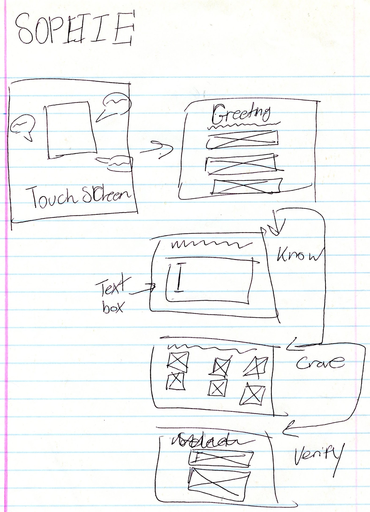
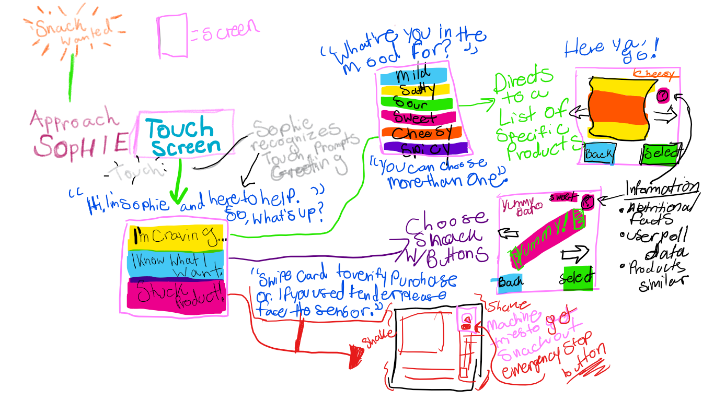
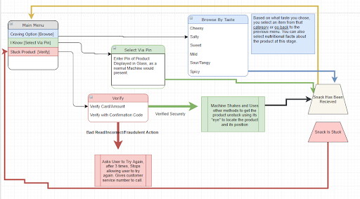

<DOCTYPE! html>
<html>
<head>
<meta charset="utf-8">

<meta name="viewport" content="width=device-width, initial-scale=1">

 <title>User Exprience|SOPHIE</title>  

<link rel="stylesheet" href="css/rapture.css"> 
<link rel="stylesheet" href="https://stackpath.bootstrapcdn.com/bootstrap/4.3.1/css/bootstrap.min.css" integrity="sha384-ggOyR0iXCbMQv3Xipma34MD+dH/1fQ784/j6cY/iJTQUOhcWr7x9JvoRxT2MZw1T" crossorigin="anonymous">
    
<link href="https://fonts.googleapis.com/css?family=Heebo|Oswald:300" rel="stylesheet">
 <style>   
/* Create three unequal columns that floats next to each other */
.column {
  float: left;
  padding: 10px;
}

/* Left and right column */
.column.side {
  width: 25%;
}

/* Middle column */
.column.middle {
  width: 50%;
}

/* Clear floats after the columns */
.row:after {
  content: "";
  display: table;
  clear: both;
}

/* Responsive layout - makes the three columns stack on top of each other instead of next to each other */
@media screen and (max-width: 600px) {
  .column.side, .column.middle {
    width: 100%;
  }
}
.row > .column {
  padding: 0 8px;
}

.row:after {
  content: "";
  display: table;
  clear: both;
}

.column {
  float: left;
  width: 33%;
}

/* The Modal (background) */
.modal {
  display: none;
  position: fixed;
  z-index: 1;
  padding-top: 100px;
  left: 0;
  top: 0;
  width: 100%;
  height: 100%;
  overflow: auto;
  background-color: black;
}

/* Modal Content */
.modal-content {
  position: relative;
  background-color: #fefefe;
  margin: auto;
  padding: 0;
  width: 90%;
  max-width: 1200px;
}

/* The Close Button */
.close {
  color: white;
  position: absolute;
  top: 10px;
  right: 25px;
  font-size: 35px;
  font-weight: bold;
}

.close:hover,
.close:focus {
  color: #999;
  text-decoration: none;
  cursor: pointer;
}

.mySlides {
  display: none;
}

.cursor {
  cursor: pointer;
}

/* Next & previous buttons */
.prev,
.next {
  cursor: pointer;
  position: absolute;
  top: 50%;
  width: auto;
  padding: 16px;
  margin-top: -50px;
  color: white;
  font-weight: bold;
  font-size: 20px;
  transition: 0.6s ease;
  border-radius: 0 3px 3px 0;
  user-select: none;
  -webkit-user-select: none;
}

/* Position the "next button" to the right */
.next {
  right: 0;
  border-radius: 3px 0 0 3px;
}

/* On hover, add a black background color with a little bit see-through */
.prev:hover,
.next:hover {
  background-color: rgba(0, 0, 0, 0.8);
}

/* Number text (1/3 etc) */
.numbertext {
  color: #f2f2f2;
  font-size: 12px;
  padding: 8px 12px;
  position: absolute;
  top: 0;
}

img {
  margin-bottom: -4px;
}

.caption-container {
  text-align: center;
  background-color: black;
  padding: 2px 16px;
  color: white;
}

.demo {
  opacity: 0.6;
}

.active,
.demo:hover {
  opacity: 1;
}

img.hover-shadow {
  transition: 0.3s;
}

.hover-shadow:hover {
  box-shadow: 0 4px 8px 0 rgba(0, 0, 0, 0.2), 0 6px 20px 0 rgba(0, 0, 0, 0.19);
}
</style>
    </head>


    
<body>
    
       
<!-- nav -->     
<!-- nav -->     
<div class="topnav">
    <a href="index.html">Home</a>
<a href="userpersonas.html">User Personas</a>
<a href="Wireframes.html">Wireframes</a>
<a href="final_sophie.html"> Final Piece</a>
</div>
<!------end of nav---->    
    
<!------end of nav---->    
    

    
<div class="banner">
     
<h1>Wireframes</h1>

 </div>


 
<!-- Portfolio Gallery Grid -->

    
  <div class="row_a">
  <div class="column_b">
    
  </div>
  <div class="column_b">
    
  </div>
  <div class="column_b">
    
  </div>
</div>
   
<!-- END MAIN -->

    </body>
    </html>
